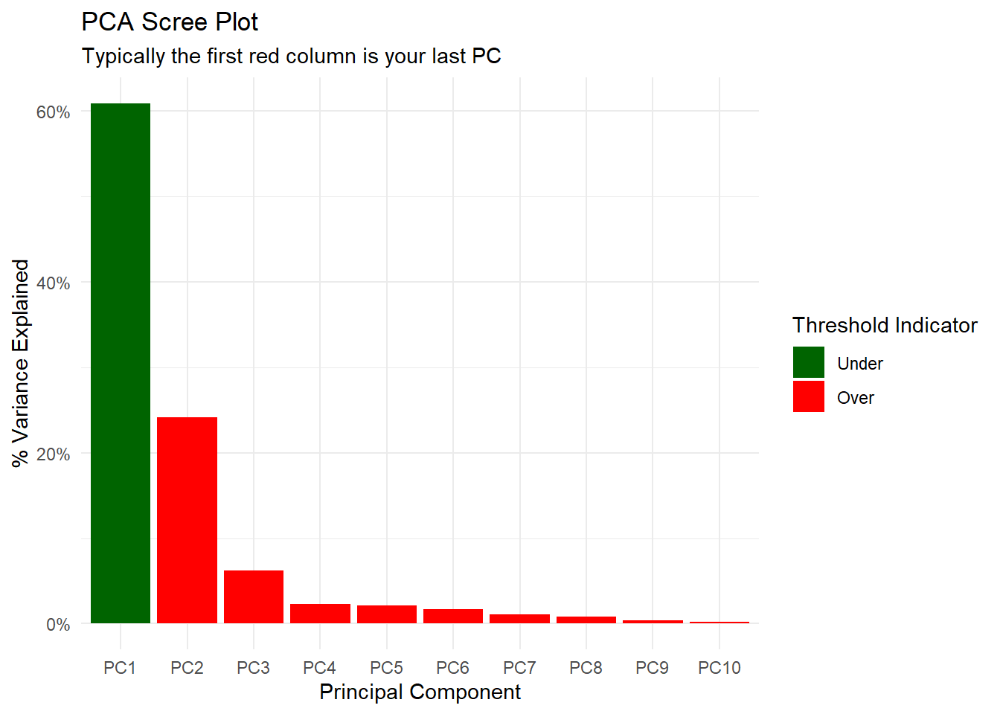
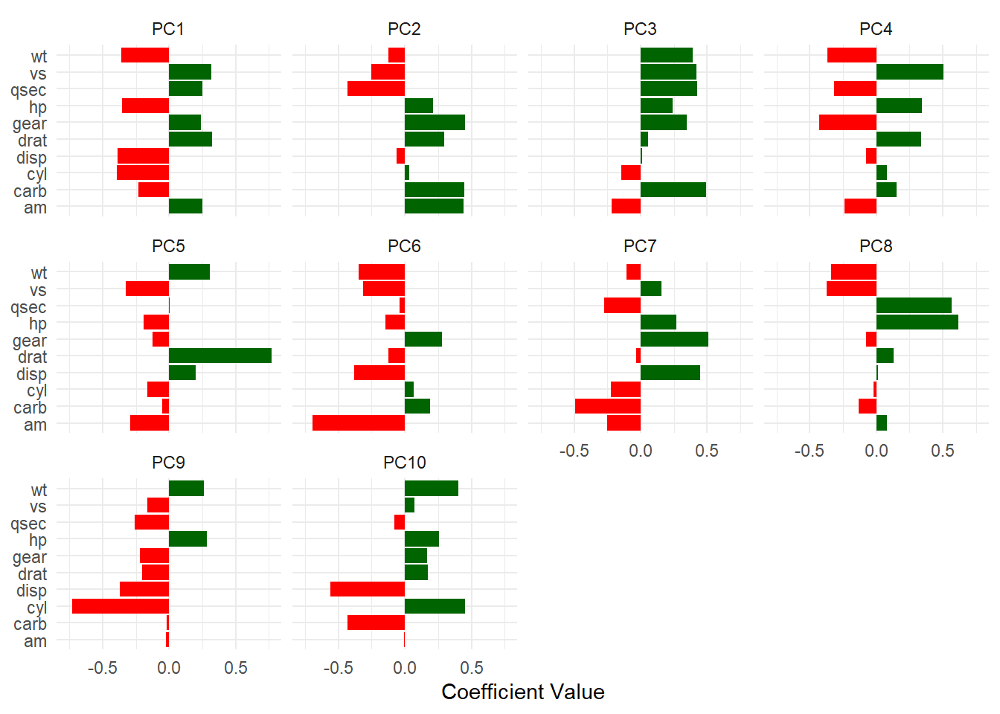
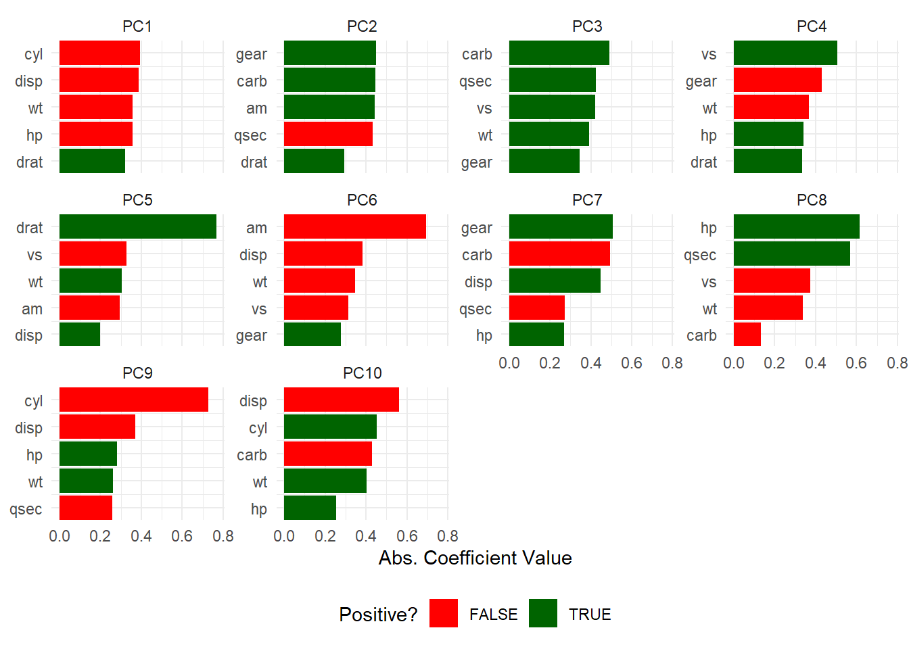
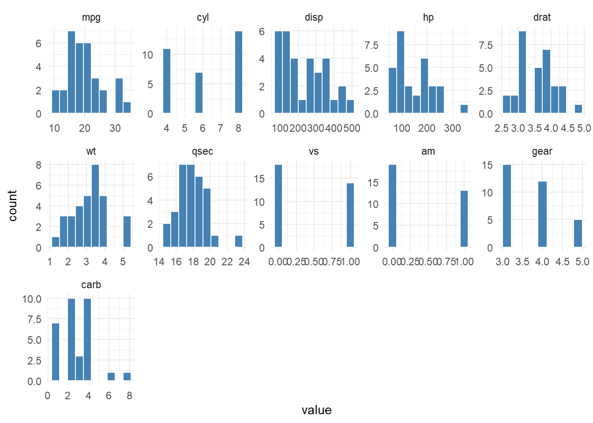
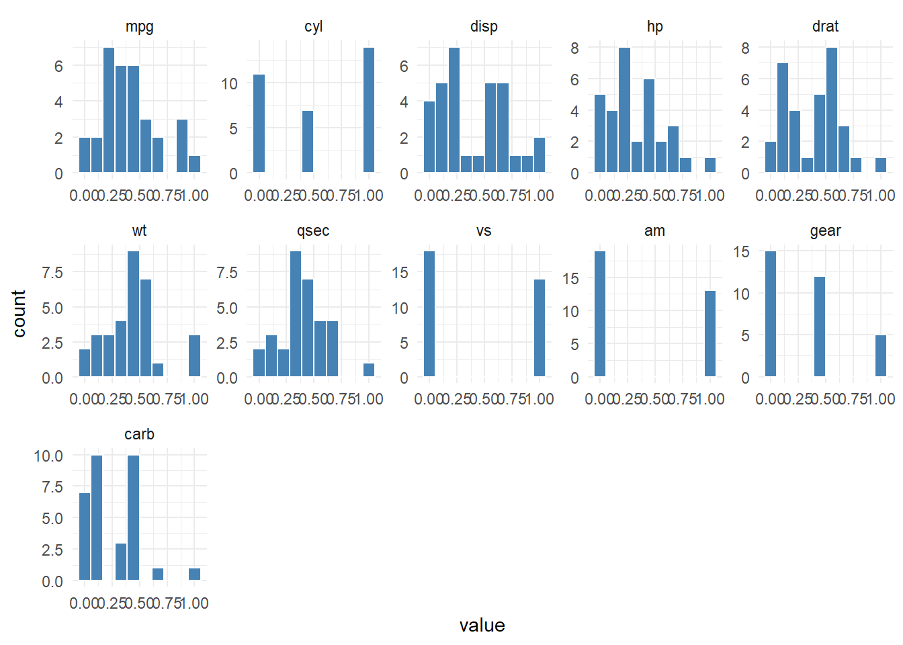
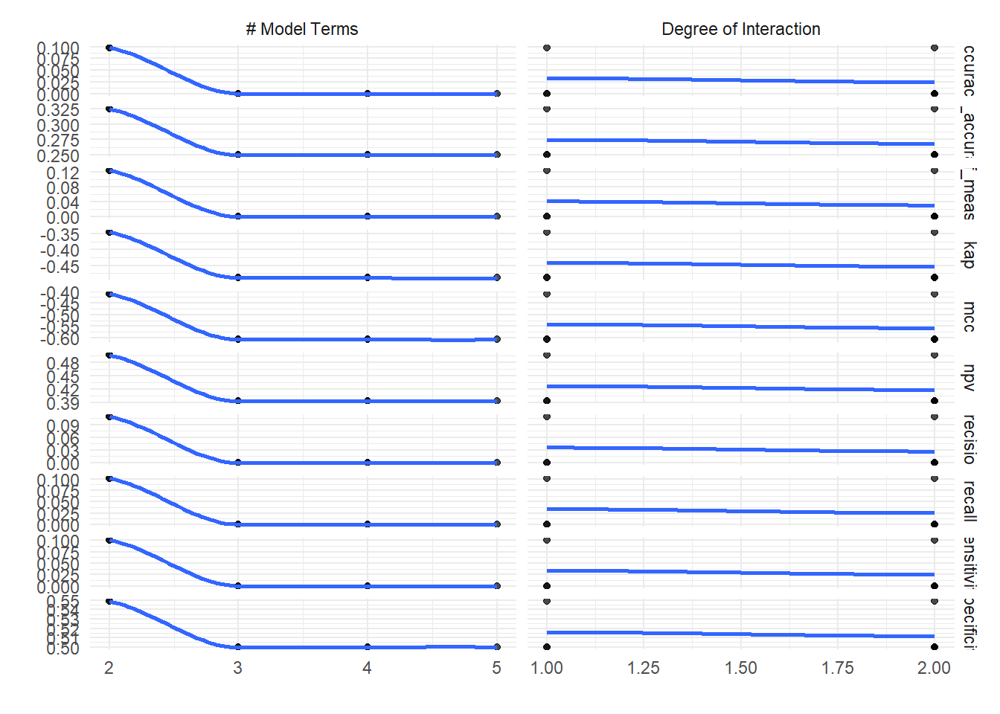

library(healthyR.ai)
library(tidyverse)
library(DT)Introduction
This post will introduction to the healthyR.ai package. The healthyR.ai package is a collection of functions that I have developed to help me analyze and visualize data. The package is designed to be easy to use and to provide a wide range of functionality for data analysis. The package is also meant to help and provide some easy boilerplate funcationality for machine learning.
It might be best to view this post in light mode to see the tables better.
Installation
You can install the released version of healthyR.ai from CRAN with:
install.packages("healthyR.ai")And the development version from GitHub with:
# install.packages("devtools")
devtools::install_github("spsanderson/healthyR.ai")Getting Started
The Goal
The ultimate goal really is to make it easier to do data analysis and machine learning in R. The package is designed to be easy to use and to provide a wide range of functionality for data analysis. The package is also meant to help and provide some easy boilerplate functionality for machine learning. This package is in its early stages and will be updated frequently.
It also keeps with the same framework of all of the healthyverse packages in that it is meant for the user to be able to use the package without having to know a lot of R. Many rural hospitals do not have the resources to perform this sort of work, so I am working hard to build these types of things out for them for free.
Let’s go through some examples.
Now let’s get a list of all the functions that are exposed in the package.
# Functions and their arguments for healthyR
pat <- c("%>%",":=","as_label","as_name","enquo","enquos","expr",
"sym","syms","required_pkgs.step_hai_fourier",
"required_pkgs.step_hai_fourier_discrete",
"required_pkgs.step_hai_hyperbolic",
"required_pkgs.step_hai_scale_zero_one",
"required_pkgs.step_hai_scal_zscore",
"required_pkgs.step_hai_winsorized_move",
"required_pkgs.step_hai_winsorized_truncate")
tibble(fns = ls.str("package:healthyR.ai")) |>
filter(!fns %in% pat) |>
mutate(params = purrr::map(fns, formalArgs)) |>
group_by(fns) |>
mutate(func_with_params = toString(params)) |>
mutate(
func_with_params = ifelse(
str_detect(
func_with_params, "\\("),
paste0(fns, func_with_params),
paste0(fns, "(", func_with_params, ")")
)) |>
select(fns, func_with_params) |>
mutate(fns = as.factor(fns)) |>
datatable(
#class = 'cell-boarder-stripe',
colnames = c("Function", "Full Call"),
options = list(
autowidth = TRUE,
pageLength = 10
)
)Examples
Let’s start off going through an example of using the function, pca_your_repipe. First, the syntax.
Example - PCA a recipe
Syntax
pca_your_recipe(.recipe_object, .data, .threshold = 0.75, .top_n = 5)Arguments
.recipe_object-.data- The full data set that is used in the original recipe object passed into .recipe_object in order to obtain the baked data of the transform..threshold- A number between 0 and 1. A fraction of the total variance that should be covered by the components..top_n- How many variables loadings should be returned per PC
Value
A list object with several components.
Details
This is a simple wrapper around some recipes functions to perform a PCA on a given recipe. This function will output a list and return it invisible. All of the components of the analysis will be returned in a list as their own object that can be selected individually. A scree plot is also included. The items that get returned are:
- pca_transform - This is the pca recipe.
- variable_loadings
- variable_variance
- pca_estimates
- pca_juiced_estimates
- pca_baked_data
- pca_variance_df
- pca_rotattion_df
- pca_variance_scree_plt
- pca_loadings_plt
- pca_loadings_plotly
- pca_top_n_loadings_plt
- pca_top_n_plotly
Working Example
library(rsample)
library(recipes)
splits <- initial_split(mtcars, prop = 0.8)
rec_obj <- recipe(mpg ~ ., data = training(splits)) |>
step_normalize(all_predictors())
pca_output <- pca_your_recipe(
.recipe_object = rec_obj,
.data = mtcars,
.threshold = 0.75,
.top_n = 5
)Now let’s check the output:
pca_output$pca_transform── Recipe ──────────────────────────────────────────────────────────────────────── Inputs Number of variables by roleoutcome: 1
predictor: 10── Operations • Centering and scaling for: all_predictors()• Centering for: recipes::all_numeric()• Scaling for: recipes::all_numeric()• Sparse, unbalanced variable filter on: recipes::all_numeric()• PCA extraction with: recipes::all_numeric_predictors()
$variable_loadings
# A tibble: 100 × 4
terms value component id
<chr> <dbl> <chr> <chr>
1 cyl -0.394 PC1 pca_RSbN6
2 disp -0.389 PC1 pca_RSbN6
3 hp -0.356 PC1 pca_RSbN6
4 drat 0.321 PC1 pca_RSbN6
5 wt -0.358 PC1 pca_RSbN6
6 qsec 0.248 PC1 pca_RSbN6
7 vs 0.319 PC1 pca_RSbN6
8 am 0.248 PC1 pca_RSbN6
9 gear 0.238 PC1 pca_RSbN6
10 carb -0.232 PC1 pca_RSbN6
# ℹ 90 more rows
$variable_variance
# A tibble: 40 × 4
terms value component id
<chr> <dbl> <int> <chr>
1 variance 6.09 1 pca_RSbN6
2 variance 2.42 2 pca_RSbN6
3 variance 0.619 3 pca_RSbN6
4 variance 0.231 4 pca_RSbN6
5 variance 0.215 5 pca_RSbN6
6 variance 0.171 6 pca_RSbN6
7 variance 0.112 7 pca_RSbN6
8 variance 0.0848 8 pca_RSbN6
9 variance 0.0409 9 pca_RSbN6
10 variance 0.0219 10 pca_RSbN6
# ℹ 30 more rows
$pca_estimates── Recipe ──────────────────────────────────────────────────────────────────────── Inputs Number of variables by roleoutcome: 1
predictor: 10── Training information Training data contained 25 data points and no incomplete rows.── Operations • Centering and scaling for: cyl, disp, hp, drat, wt, qsec, ... | Trained• Centering for: cyl, disp, hp, drat, wt, qsec, vs, am, gear, ... | Trained• Scaling for: cyl, disp, hp, drat, wt, qsec, vs, am, gear, ... | Trained• Sparse, unbalanced variable filter removed: <none> | Trained• PCA extraction with: cyl, disp, hp, drat, wt, qsec, vs, am, ... | Trained
$pca_juiced_estimates
# A tibble: 25 × 3
mpg PC1 PC2
<dbl> <dbl> <dbl>
1 -1.67 -3.54 -0.529
2 0.0945 0.633 2.03
3 0.394 2.31 -1.60
4 0.178 1.88 -1.88
5 1.99 3.29 0.00164
6 1.66 3.79 0.988
7 -0.670 -2.14 -0.503
8 -0.953 -3.45 -0.248
9 2.24 3.59 0.0209
10 0.161 2.47 0.534
# ℹ 15 more rows
$pca_baked_data
# A tibble: 32 × 3
mpg PC1 PC2
<dbl> <dbl> <dbl>
1 0.0945 0.633 2.03
2 0.0945 0.613 1.87
3 0.394 2.76 0.137
4 0.161 0.228 -2.17
5 -0.288 -2.01 -0.623
6 -0.388 0.191 -2.55
7 -1.02 -2.82 0.438
8 0.660 1.91 -1.13
9 0.394 2.31 -1.60
10 -0.205 0.622 0.125
# ℹ 22 more rows
$pca_variance_df
# A tibble: 10 × 6
PC var_explained var_pct_txt cum_var_pct cum_var_pct_txt ou_threshold
<chr> <dbl> <chr> <dbl> <chr> <fct>
1 PC1 0.609 60.86% 0.609 60.86% Under
2 PC2 0.242 24.19% 0.850 85.05% Over
3 PC3 0.0619 6.19% 0.912 91.24% Over
4 PC4 0.0231 2.31% 0.935 93.55% Over
5 PC5 0.0215 2.15% 0.957 95.70% Over
6 PC6 0.0171 1.71% 0.974 97.41% Over
7 PC7 0.0112 1.12% 0.985 98.52% Over
8 PC8 0.00848 0.85% 0.994 99.37% Over
9 PC9 0.00409 0.41% 0.998 99.78% Over
10 PC10 0.00219 0.22% 1 100.00% Over
$pca_rotation_df
# A tibble: 10 × 10
PC1 PC2 PC3 PC4 PC5 PC6 PC7 PC8 PC9
<dbl> <dbl> <dbl> <dbl> <dbl> <dbl> <dbl> <dbl> <dbl>
1 -0.394 0.0328 -0.146 0.0804 -0.162 0.0655 -0.223 -0.0200 -0.728
2 -0.389 -0.0623 0.0134 -0.0763 0.200 -0.383 0.447 0.0126 -0.369
3 -0.356 0.213 0.240 0.342 -0.195 -0.145 0.270 0.614 0.282
4 0.321 0.295 0.0556 0.336 0.768 -0.125 -0.0333 0.127 -0.204
5 -0.358 -0.124 0.391 -0.367 0.305 -0.347 -0.105 -0.338 0.262
6 0.248 -0.432 0.425 -0.317 0.00567 -0.0377 -0.272 0.568 -0.259
7 0.319 -0.255 0.421 0.505 -0.328 -0.313 0.156 -0.373 -0.163
8 0.248 0.443 -0.217 -0.241 -0.294 -0.693 -0.253 0.0794 -0.0246
9 0.238 0.449 0.346 -0.431 -0.125 0.278 0.509 -0.0781 -0.222
10 -0.232 0.445 0.490 0.151 -0.0541 0.189 -0.494 -0.133 -0.0201
# ℹ 1 more variable: PC10 <dbl>
$pca_variance_scree_plt
$pca_loadings_plt
$pca_loadings_plotly
$pca_top_n_loadings_plt
$pca_top_n_plotlyPretty easy as you can see.
Example - Histogram Facet Plot
Syntax
hai_histogram_facet_plot(
.data,
.bins = 10,
.scale_data = FALSE,
.ncol = 5,
.fct_reorder = FALSE,
.fct_rev = FALSE,
.fill = "steelblue",
.color = "white",
.scale = "free",
.interactive = FALSE
)Arguments
.data- The data you want to pass to the function..bins- The number of bins for the histograms..scale_data- This is a boolean set to FALSE. TRUE will use hai_scale_zero_one_vec() to [0, 1] scale the data..ncol- The number of columns for the facet_warp argument..fct_reorder- Should the factor column be reordered? TRUE/FALSE, default of FALSE.fct_rev- Should the factor column be reversed? TRUE/FALSE, default of FALSE.fill- Default is steelblue.color- Default is ‘white’.scale- Default is ‘free’.interactive- Default is FALSE, TRUE will produce a plotly plot.
Working Example
hai_histogram_facet_plot(mtcars, .interactive = FALSE)
hai_histogram_facet_plot(mtcars, .interactive = FALSE, .scale_data = TRUE)
Example - Boilerplacte Funcationality
Now we are going to go over some simple boilerplate funcationality. I call it boilerplate because you don’t have to change anything if you dont want to. For the boilerplate function there is a corresponding data preprocessor that will get the data into the shape it needs to be in for the algorithm. Let’s take a look.
Working Example
First lets look at the data, then we will look at it after the preprocessor.
head(iris) Sepal.Length Sepal.Width Petal.Length Petal.Width Species
1 5.1 3.5 1.4 0.2 setosa
2 4.9 3.0 1.4 0.2 setosa
3 4.7 3.2 1.3 0.2 setosa
4 4.6 3.1 1.5 0.2 setosa
5 5.0 3.6 1.4 0.2 setosa
6 5.4 3.9 1.7 0.4 setosarec_obj <- hai_earth_data_prepper(iris, Species ~ .)
rec_objNow to run it through the boilerplate:
auto_earth <- hai_auto_earth(
.data = iris,
.rec_obj = rec_obj,
.best_metric = "f_meas",
.model_type = "classification"
)Now let’s inspect the output:
names(auto_earth)[1] "recipe_info" "model_info" "tuned_info" Recipe Information
auto_earth[["recipe_info"]]Model Information
auto_earth[["model_info"]]$model_spec
MARS Model Specification (classification)
Main Arguments:
num_terms = tune::tune()
prod_degree = tune::tune()
prune_method = none
Computational engine: earth
$wflw
══ Workflow ════════════════════════════════════════════════════════════════════
Preprocessor: Recipe
Model: mars()
── Preprocessor ────────────────────────────────────────────────────────────────
4 Recipe Steps
• step_string2factor()
• step_novel()
• step_dummy()
• step_zv()
── Model ───────────────────────────────────────────────────────────────────────
MARS Model Specification (classification)
Main Arguments:
num_terms = tune::tune()
prod_degree = tune::tune()
prune_method = none
Computational engine: earth
$fitted_wflw
══ Workflow [trained] ══════════════════════════════════════════════════════════
Preprocessor: Recipe
Model: mars()
── Preprocessor ────────────────────────────────────────────────────────────────
4 Recipe Steps
• step_string2factor()
• step_novel()
• step_dummy()
• step_zv()
── Model ───────────────────────────────────────────────────────────────────────
GLM (family binomial, link logit):
nulldev df dev df devratio AIC iters converged
setosa 144.779 111 52.6908 110 0.6360 56.69 22 1
versicolor 137.505 111 125.5536 110 0.0869 129.60 4 1
virginica 144.779 111 15.1575 110 0.8950 19.16 9 1
Earth selected 2 of 15 terms, and 1 of 4 predictors (pmethod="none") (nprune=2)
Termination condition: Reached nk 21
Importance: Petal.Length-unused, Sepal.Length-unused, Sepal.Width-unused, ...
Number of terms at each degree of interaction: 1 1 (additive model)
Earth
GCV RSS GRSq RSq
setosa 0.15145196 16.066078 0.34455933 0.36796602
versicolor 0.20252995 21.484449 0.05906052 0.09266277
virginica 0.04535734 4.811523 0.80370644 0.81071635
All 0.36072282 38.265605 0.46747354 0.48649080
$was_tuned
[1] "tuned"Tuned Information
auto_earth[["tuned_info"]]$tuning_grid
# A tibble: 7 × 2
num_terms prod_degree
<int> <int>
1 3 2
2 4 1
3 5 2
4 3 1
5 4 2
6 2 2
7 2 1
$cv_obj
# Monte Carlo cross-validation (0.75/0.25) with 25 resamples
# A tibble: 25 × 2
splits id
<list> <chr>
1 <split [84/28]> Resample01
2 <split [84/28]> Resample02
3 <split [84/28]> Resample03
4 <split [84/28]> Resample04
5 <split [84/28]> Resample05
6 <split [84/28]> Resample06
7 <split [84/28]> Resample07
8 <split [84/28]> Resample08
9 <split [84/28]> Resample09
10 <split [84/28]> Resample10
# ℹ 15 more rows
$tuned_results
# Tuning results
# Monte Carlo cross-validation (0.75/0.25) with 25 resamples
# A tibble: 25 × 4
splits id .metrics .notes
<list> <chr> <list> <list>
1 <split [84/28]> Resample01 <tibble [77 × 6]> <tibble [5 × 3]>
2 <split [84/28]> Resample02 <tibble [77 × 6]> <tibble [5 × 3]>
3 <split [84/28]> Resample03 <tibble [77 × 6]> <tibble [5 × 3]>
4 <split [84/28]> Resample04 <tibble [77 × 6]> <tibble [5 × 3]>
5 <split [84/28]> Resample05 <tibble [77 × 6]> <tibble [5 × 3]>
6 <split [84/28]> Resample06 <tibble [77 × 6]> <tibble [5 × 3]>
7 <split [84/28]> Resample07 <tibble [77 × 6]> <tibble [5 × 3]>
8 <split [84/28]> Resample08 <tibble [77 × 6]> <tibble [5 × 3]>
9 <split [84/28]> Resample09 <tibble [77 × 6]> <tibble [5 × 3]>
10 <split [84/28]> Resample10 <tibble [77 × 6]> <tibble [5 × 3]>
# ℹ 15 more rows
There were issues with some computations:
- Warning(s) x5: While computing multiclass `precision()`, some levels had no pred...
- Warning(s) x6: While computing multiclass `precision()`, some levels had no pred...
- Warning(s) x1: While computing multiclass `precision()`, some levels had no pred...
- Warning(s) x1: While computing multiclass `precision()`, some levels had no pred...
- Warning(s) x2: While computing multiclass `precision()`, some levels had no pred...
- Warning(s) x1: While computing multiclass `precision()`, some levels had no pred...
- Warning(s) x5: While computing multiclass `precision()`, some levels had no pred...
- Warning(s) x4: While computing multiclass `precision()`, some levels had no pred...
- Warning(s) x48: glm.fit: algorithm did not converge, glm.fit: fitted probabilitie...
- Warning(s) x2: glm.fit: algorithm did not converge, glm.fit: fitted probabilitie...
- Warning(s) x49: glm.fit: fitted probabilities numerically 0 or 1 occurred, glm.fi...
- Warning(s) x1: glm.fit: fitted probabilities numerically 0 or 1 occurred, glm.fi...
Run `show_notes(.Last.tune.result)` for more information.
$grid_size
[1] 10
$best_metric
[1] "f_meas"
$best_result_set
# A tibble: 1 × 8
num_terms prod_degree .metric .estimator mean n std_err .config
<int> <int> <chr> <chr> <dbl> <int> <dbl> <chr>
1 2 1 f_meas macro 0.124 25 0.0154 Preprocessor1_Mo…
$tuning_grid_plot
$plotly_grid_plotMetric Sets
With this package there comes some metric set’s that can be computed using the yardstick package. These are the metric sets that are available:
Classification
hai_default_classification_metric_set()A metric set, consisting of:
- `sensitivity()`, a class metric | direction: maximize
- `specificity()`, a class metric | direction: maximize
- `recall()`, a class metric | direction: maximize
- `precision()`, a class metric | direction: maximize
- `mcc()`, a class metric | direction: maximize
- `accuracy()`, a class metric | direction: maximize
- `f_meas()`, a class metric | direction: maximize
- `kap()`, a class metric | direction: maximize
- `ppv()`, a class metric | direction: maximize
- `npv()`, a class metric | direction: maximize
- `bal_accuracy()`, a class metric | direction: maximizeRegression
hai_default_regression_metric_set()A metric set, consisting of:
- `mae()`, a numeric metric | direction: minimize
- `mape()`, a numeric metric | direction: minimize
- `mase()`, a numeric metric | direction: minimize
- `smape()`, a numeric metric | direction: minimize
- `rmse()`, a numeric metric | direction: minimize
- `rsq()`, a numeric metric | direction: maximizeHere is a list of the items currently on it as of writing this article:
- Plotting Functions - Functions for plotting.
- Clustering Functions - Functions for clustering and analysis.
- Boiler Plate Functions - Functions for automatic recipes, workflows, and tuned models.
- Dimensionality Reduction - Functions for dimension reduction.
- Data Wrangling - Functions for data wrangling.
- Data Preprocessors - Functions for data preprocessing.
- Recipe Steps - Functions to add recipe steps.
- Table Functions - Functions that return tibbles.
- Vectorized Functions - Vector functions.
- Augmenting Functions - Functions for data augmentation.
- Miscellaneous Functions - Miscellaneous utility functions.
- Metric Sets - Metric sets for evaluation.
For more detailed information, you can visit the healthyR.ai function reference page.
Conclusion
I hope this helped a bit with understanding the healthyR.ai package. It is a very powerful package that can help you with a lot of different tasks. I will be writing more about this package in the future. If you have any questions or comments, please feel free to reach out to me at any of these:
People can get in touch with you through the following social profiles:
- LinkedIn: linkedin.com/in/spsanderson
- Mastodon: mstdn.social/@stevensanderson
- Telegram: t.me/steveondata
Happy coding!